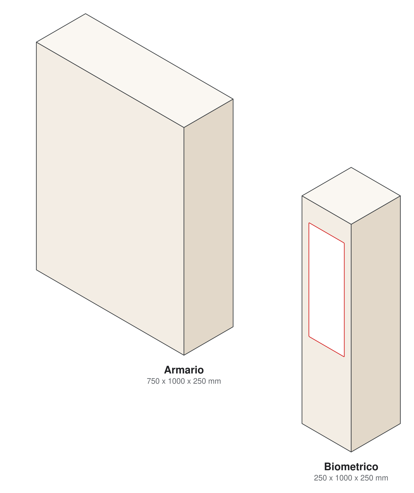
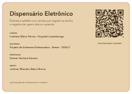

O projeto em uma página
O que é, por que existe e o que já está de pé.
No Hospital Luxemburgo o medicamento sai de farmácias centrais. Cada profissional vai até lá, bipa o crachá, bipa o item e leva até o leito. Funciona, mas concentra todo mundo nos mesmos balcões: fila, deslocamento e atraso, num hospital em que uma hora de diferença na insulina de um paciente diabético já importa. Os equipamentos comerciais que resolvem isso são de poucas empresas e chegam perto de R$ 4 milhões, valor fora do alcance de um hospital que atende só pelo SUS.
A proposta é um armário pequeno e auditável, perto do paciente, que guarda parte do estoque e se abre só para quem está autorizado. Cada unidade atende cerca de 20 leitos e é reposta pela logística duas vezes ao dia. Quem abre alcança tudo lá dentro; o controle vem do registro de cada abertura, que o hospital cruza com as câmeras que já tem.
Gabinete
Dois módulos de MDF cortados a laser: o biométrico, com tela, teclado, leitor de digital e câmera, e o armário, com porta de acrílico, fechadura elétrica e um gaveteiro organizado por letra.Eletrônica
Um Arduino Mega decide tudo localmente e continua funcionando sem rede. Uma ESP32-CAM leva cada evento, com foto do acesso autorizado, até o servidor.Servidor
Python com SQLite e painel web, hospedado numa VM em São Paulo com HTTPS, senha no navegador e PIN, limite de tentativas e backup diário.Em números
20 leitos
por dispensárioUma unidade por ala, reposta duas vezes ao dia conforme ocupação e consumo.
13 + 14
requisitosFuncionais e não funcionais da Fase 1, rastreados até os critérios de aceite.
100 pessoas
cadastrosIDs de 001 a 100, digital e senha próprias, desativação sem apagar histórico.
265 ativos
RENAME 2024Princípios ativos em comprimido ou cápsula que definiram as 15 gavetas por letra.
750 x 1000 x 250
mm, armárioCabe inteiro na mesa de 1 m da cortadora, sem emenda.
~300 ms
TLSNegociação HTTPS medida contra o servidor; cada pedido seguinte leva de 22 a 50 ms.
Explore a documentação
Cada página aprofunda uma parte do projeto.
Onde o projeto está
Estado em 08/11/2026.
| Parte | Situação | Falta |
|---|---|---|
| Requisitos e escopo | fechado | respostas do cliente sobre API, crachá e operação sem rede (fora do protótipo) |
| Módulo biométrico | cortado | conferir o encaixe do leitor na frente refeita em 06/11 |
| Módulo armário | em corte | fundo da porta com as divisórias e as 6 últimas caixas de gaveta |
| Bancada eletrônica | montada | teste bloco a bloco com firmware e o diodo da fechadura |
| Firmware | compila e passa nos testes | validação em hardware |
| Servidor na nuvem | no ar, com HTTPS | primeira conexão da câmera real (09/11) |
| Documentação | esta página | atualizar com os resultados da bancada |
Os dois módulos

